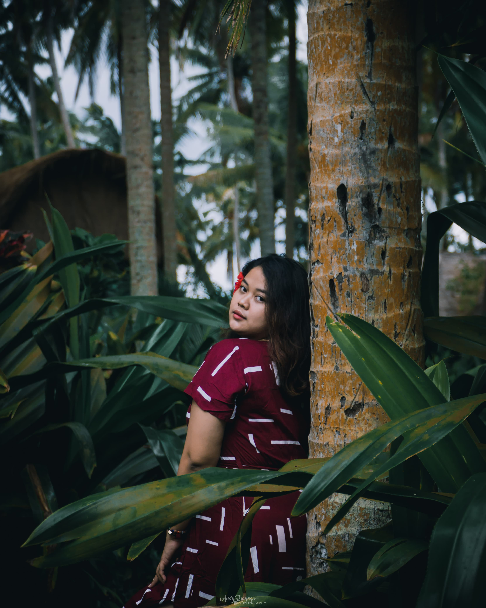
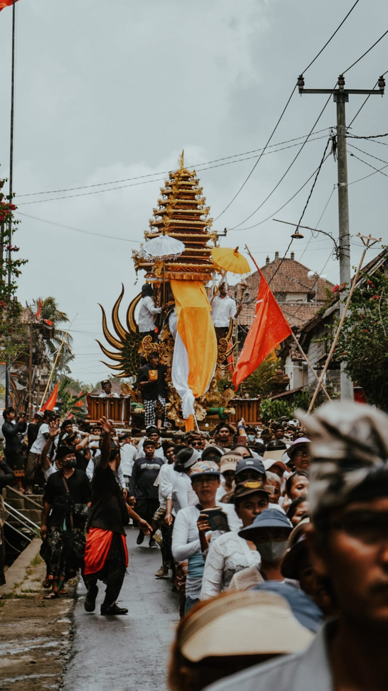

INTRODUCTION
I am an English Literature fresh graduate. This digital world has made me not only focus on completing my education but also learning many other things autodidactically. Since I have an interest in the creative world such as photography, videography, digital marketing, and product design, I started to pursue it while completing my education. I like learning new things because that way I feel I can gain various experiences that are useful for my career and knowledge.
- Birthday : 29 November 1997
- Age : 26
- Phone : 082145750002
- City : Denpasar, Bali
- Degree : Bachelor
- Email : andyprayoga97@gmail.com
- Instagram : andyprayooga
SKILL
ADOBE LIGHTROOM
100%
ADOBE PHOTOSHOP
90%
DAVINCI REVOLVES
90%
CANVA
80%
CAPCUT
100%
VN
100%
RESUME
PROFESSIONAL EXPERIENCE
FREELANCE PHOTOGRAPHER
2021 - 2023- Received documentation services for Ngaben and Mepandes ceremonies.
- Received yearbook photo-making services at SMK N 1 Tampaksiring.
- Doing a photo shoot for a couple on holiday in Bali.
- Design and compile documentation photo albums.
PROJECT

